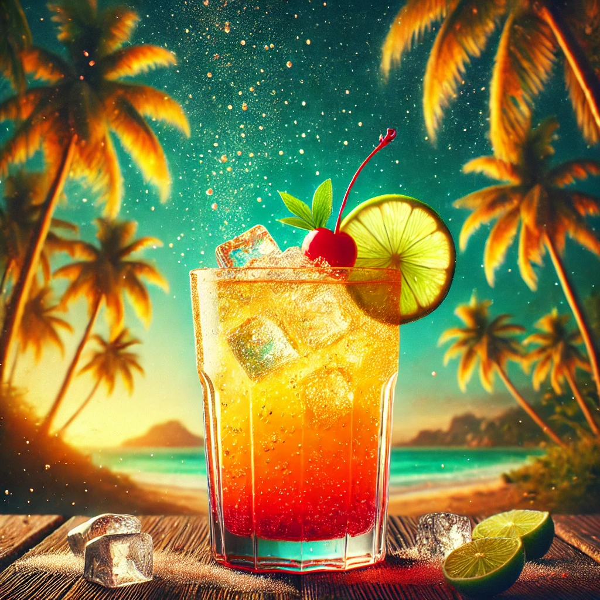

THE BUSTY MERMAID

Treasure Island Fizz
Ingredienser og Oppskrift:
Ahoy, eventyrlystne! Velkommen til **Treasure Island Fizz**, en drink som får deg til å føle at du har funnet en skjult skatt på en øde øy! Denne boblende, tropiske drinken er som en forfriskende bris på en varm dag, fylt med fruktige smaker og en sprudlende sjarm som vil få deg til å føle deg som en ekte pirat på jakt etter gull.
Så hva inneholder denne skattfylte drinken? Her er oppskriften på å finne din egen skatt:
- 1 del **rom** (den ekte piratenes favoritt for eventyr)
- 1 del **ananasjuice** (for en tropisk, solfylt smak)
- 1 del **limejuice** (som et hint av sjøbrisen)
- 1 del **grenadine** (for en søt og fargerik finish)
- Et dash **sitronsoda** (for å gi drinken et sprudlende kick)
Hvordan lage denne drinken:
- Fyll en shaker med is og tøm alle ingrediensene oppi.
- Rist som om du har funnet den siste skatten på en ukjent øy!
- Sil drinken i et høyt glass fylt med is og topp med et lite dash sitronsoda.
- Skål og nyt smaken av å være på vei mot en legendarisk skatt!
OBS: Denne drinken er kjent for å få folk til å føle at de har funnet den ultimate skatten – drikk med forsiktighet, og vær forberedt på eventyr!